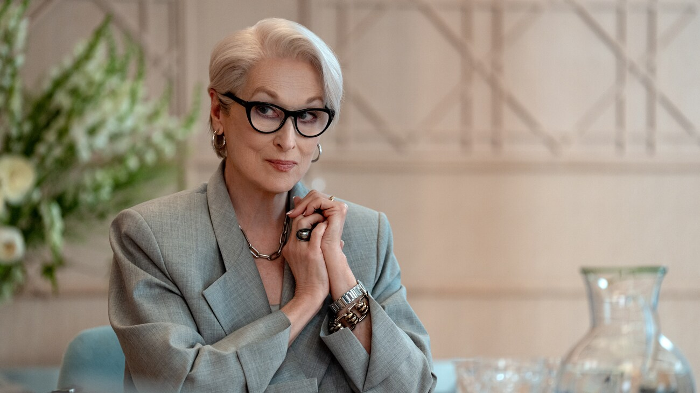

Lugares de NYC
Se grabó en zonas icónicas como la Quinta Avenida, Madison Avenue, y Central Park, manteniendo el ambiente de moda de alto nivel.
Dos décadas después de dejar la revista Runway, Andrea "Andy" Sachs regresa como editora de reportajes contratada a espaldas de Miranda Priestly, quien enfrenta una severa crisis de reputación. En un panorama mediático actual dominado por el contenido digital rápido, el clickbait y la decadencia de la prensa impresa, ambas se ven obligadas a trabajar juntas de nuevo en una industria que ya no reconocen.
La tensión estalla cuando el gigante Elias-Clarke sufre recortes presupuestarios tras la muerte de su dueño original. Durante la Semana de la Moda de Milán, Andy e Emily Charlton —ahora una poderosa ejecutiva aliada con un mecenas tecnológico— presentan un plan para salvar la revista que esconde una traición: Emily planea reemplazar y despedir definitivamente a Miranda del trono de la moda.
Para frenar la destrucción de la identidad de Runway a manos de la inteligencia artificial, Miranda y Andy deberán unir fuerzas con nuevos aliados corporativos. Tras superar conspiraciones, rivalidades y dilemas personales —incluyendo la propuesta de una biografía no autorizada—, Miranda recupera el control absoluto de la revista con su icónica y renovada arrogancia, consolidando el eterno lazo creativo y de respeto con Andy.

El rodaje se lleva a cabo principalmente en Nueva York (Manhattan, Chelsea, 49th Street), repitiendo la icónica ambientación urbana de la primera entrega. La producción también se trasladó a Italia, específicamente Milán (barrio de Brera) y la zona del Lago de Como, para escenas internacionales.
Se grabó en zonas icónicas como la Quinta Avenida, Madison Avenue, y Central Park, manteniendo el ambiente de moda de alto nivel.
Milán fue fundamental, coincidiendo con escenas de moda y áreas restringidas en Brera.
Se filmaron escenas en Nueva York que evocan el estilo de la película original, con Anne Hathaway corriendo por las calles.

La película cuenta con el regreso del equipo creativo original: David Frankel vuelve como director y Aline Brosh McKenna como guionista, basada en los personajes de Lauren Weisberger. La secuela mantiene la esencia de la original, con Wendy Finerman en la producción.